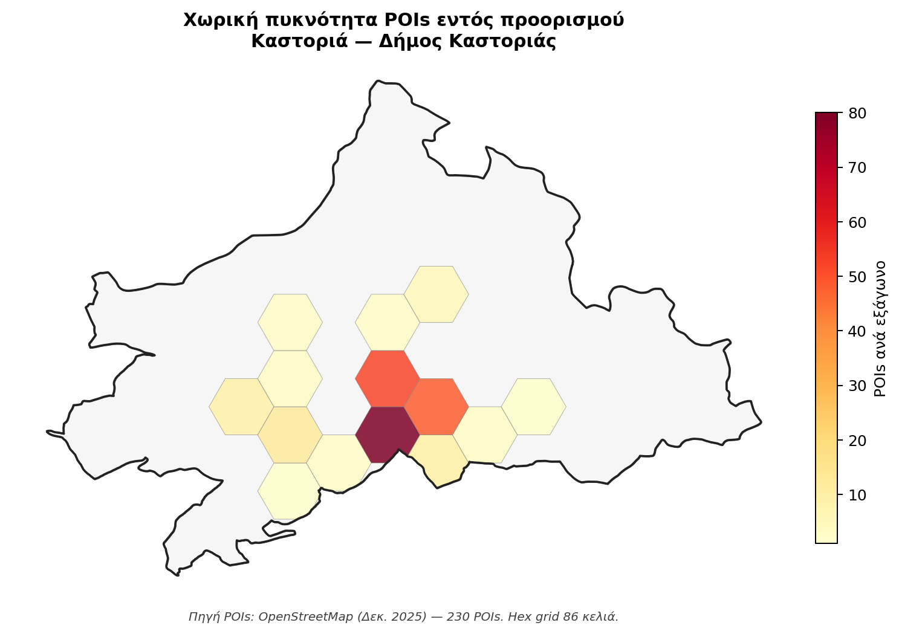

Σύνοψη Διοίκησης
Η Καστοριά είναι αναπτυσσόμενος ορεινός χειμερινός προορισμός με ιδιαίτερο προφίλ: 64.295 αφίξεις το 2024 — ένας από τους μικρότερους όγκους της δεκάδας — και ανάκαμψη μόλις 69% σε σχέση με προ-πανδημικά επίπεδα. Διαθέτει τη χαμηλότερη εποχικότητα όλων (συντελεστής Gini 0,151), αλλά αυτό αντανακλά ομοιόμορφα χαμηλή ζήτηση και όχι μια πραγματική 12μηνη λειτουργία — με μήνα αιχμής μάλιστα τον Οκτώβριο. Διαθέτει σημαντικό φυσικό κεφάλαιο (λίμνη Ορεστιάδα, 72 βυζαντινές εκκλησίες) και προσβάσιμη χρηματοδότηση JTF λόγω μετα-λιγνιτικής μετάβασης. Στρατηγική προτεραιότητα: αναγνωρισιμότητα, υποδομές, στρατηγική τοποθέτηση στην ορεινή/πολιτιστική αγορά.
Τι σημαίνει πρακτικά
Η χαμηλή εποχικότητα της Καστοριάς δεν είναι επιτυχία από μόνη της — αντανακλά ομοιόμορφα χαμηλή ζήτηση. Πρέπει να χτιστεί νέα ζήτηση γύρω από τη λίμνη Ορεστιάδα, τη βυζαντινή κληρονομιά (72 εκκλησίες), τη δημιουργική οικονομία της γούνας, τη γαστρονομία και την προσβάσιμη χρηματοδότηση JTF (Ταμείο Δίκαιης Μετάβασης) — όχι να μιμηθεί νησιωτικά μοντέλα.
Ενότητα 01
Επισκόπηση
Δεκαέξι δείκτες-κλειδιά που τοποθετούν την Καστοριά ως τον πιο διακριτό αναπτυσσόμενο προορισμό της μελέτης, με τη χαμηλότερη εποχικότητα Gini 0,151 και μοναδικό μήνα αιχμής Οκτώβριο — φθινοπωρινό προφίλ Λίμνης Ορεστιάδας. Ταυτόχρονα η Καστοριά είναι το πρώτο εμπειρικά τεκμηριωμένο διασταυρωτικό πεδίο επικύρωσης του μοτίβο κριτικής εκ των έσω σε αντικειμενικά υπο-τουριστικό περιβάλλον (Ζώνη Β προληπτικό παράθυρο).
Στρατηγική σύνοψη
Ζώνη Β προληπτικό παράθυρο με Δίκαιη Μετάβαση JTF
Η Καστοριά αποτελεί τον πιο διακριτό αναπτυσσόμενο προορισμό από εποχικά χαρακτηριστικά: ο μοναδικός με μήνα αιχμής Οκτώβριο (φθινοπωρινός προφίλ Λίμνης Ορεστιάδας) και ο χαμηλότερος συντελεστής Gini εποχικότητας (0,151). Ταυτόχρονα παρουσιάζει τη χαμηλότερη ανάκαμψη της μελέτης (0,691) και αποτελεί το πιο σαφές περιστατικό διαρθρωτικής στασιμότητας μετά την πανδημία. Η Καστοριά συγκλίνει επιπλέον σε τέσσερις ταυτοχρόνους «χαμηλότερη» δηλώσεις: ανάκαμψη 0,691, ALoS 1,72, bed turnover 66,65 και Gini 0,151.
Ταυτόχρονα η Καστοριά είναι ο πρώτος προορισμός όπου τεκμηριώνεται εμπειρικά το μοτίβο κριτικής εκ των έσω σε αντικειμενικά υπο-τουριστικό περιβάλλον (TII βασικό 2,407 καθαρά < Saveriades 5, POI θ̂ −0,60 δεύτερη πιο αρνητική). Έξι από οκτώ δείκτες της resident-side έρευνας εμφανίζουν στατιστικά σημαντικά Δpp στην insider υπο-ομάδα Q15: «Στάθμευση» +19,0 ποσοστιαίες μονάδες (η μεγαλύτερη ασυμμετρία της μελέτης), «Στέγη» +14,0 ποσοστιαίες μονάδες, «Περιβάλλον» +12,4 ποσοστιαίες μονάδες, δήλωση γενικής ικανοποίησης «Ικανοποίηση gap» +10,9 ποσοστιαίες μονάδες, «Μέτρα» +9,8 ποσοστιαίες μονάδες, δήλωση αναγνώρισης κορεσμού «Κορεσμός» +8,1 ποσοστιαίες μονάδες.
Η στρατηγική θέση είναι «Όψιμη Εξερεύνηση και Πρώιμη Εμπλοκή σε Ζώνη Β»: ένα πεπερασμένο προληπτικό παράθυρο για ενεργοποίηση λειτουργικής δημοτικής δομής (Πρόταση 1 DMMO ή Μακεδνός ΑΕ), αφηγηματική σύνθεση τεσσάρων πυλώνων (72 βυζαντινές εκκλησίες + Λίμνη Ορεστιάδα + αρχοντικά + Δισπηλιό), ALoS lift 1,72 → 3,0+ μέσω Διαδρομής Κληρονομιάς Β. Ελλάδας, και θεσμοθέτησης Πίνακα Πρώιμης Προειδοποίησης ως πρωτότυπη συμβολή στη Λευκή Βίβλο. ⚠ Eurostat NUTS3 EL531 αντιστοιχεί σε «Grevena, Kozani» (όχι ΠΕ Καστοριάς) — υποκατάσταση μέσω ΕΛΣΤΑΤ SEL45 αυτοτελής Π.Ε. + Eurostat NUTS2 EL53 ως ευρύτερο πλαίσιο· πλήρης τεκμηρίωση §10.4.3.
Χωρική Ανάλυση
Χωρική απεικόνιση
Πού βρίσκεται ο προορισμός στον εθνικό χάρτη πίεσης-ικανοποίησης, και πώς κατανέμεται η σχέση κατοίκου-τουρισμού εντός του.
Σχήμα · Χωρική ανάλυση εντός προορισμού
Δήμος Καστοριάς — POI χωρική πυκνότητα

Χωρική πυκνότητα σημείων τουριστικού ενδιαφέροντος (POIs OpenStreetMap) σε hex-grid εντός των ορίων του Δήμου. Πορτοκαλί ένταση δηλώνει υψηλότερη χωρική συγκέντρωση τουριστικής υποδομής.
Συγκριτικό · Αντικειμενική × Υποκειμενική πίεση
Θέση στον bivariate χάρτη TFI × Ικανοποίηση κατοίκων

Συνδυασμός αντικειμενικού δείκτη φέρουσας ικανότητας (TFI Defert 2024) και υποκειμενικής ικανοποίησης κατοίκων (Q9_SAT) σε ένα δι-διαστάσιμο choropleth. Τέσσερις διακριτές καταστάσεις προορισμού.
Ενότητα 02
Ζήτηση & Προσφορά
Δεκαπέντε έτη εξέλιξης ζήτησης (2010–2024) με δομική στασιμότητα της αλλοδαπής αγοράς και νέα κάμψη −3,2% στο 2024. Ξενοδοχειακό δυναμικό 1.659 κλινών σε 35 μονάδες με συρρίκνωση −13,5% κλινών στη δεκαετία — η μοναδική τέτοια αρνητική δυναμική μεταξύ δέκα προορισμών. Αγορά STR 12,6% διανυκτερεύσεων με αναλογία 6,6:1 προς ξενοδοχεία (η υψηλότερη της μελέτης).
Σχήμα 10.1 · Αφίξεις 2010–2024
Δομική στασιμότητα: CAGR αλλοδαπών +0,69% (η χαμηλότερη των δέκα)
INSETE Intelligence + ΕΛΣΤΑΤ STO12. 82,5% ημεδαποί 2024 — η υψηλότερη κυριαρχία εγχώριου τουρισμού της δεκάδας. Στασιμότητα 2015→2024 παρά μερική προ-πανδημική επιτάχυνση 2015-2019.
Σχήμα 10.2 · Δείκτης ανάκαμψης 2024/2019
Ανάκαμψη 0,691 — η χαμηλότερη της δεκάδας
Σύγκριση 10 προορισμών. Λόγος >1 σημαίνει ξεπέρασε την προ-πανδημική επίδοση. Η Καστοριά δεν έχει υπερβεί τα προ-πανδημικά επίπεδα (−30,9% αλλοδαπές αφίξεις vs 2019) και παρουσιάζει νέα κάμψη −3,2% το 2024.
Σχήμα 10.3 · Μηνιαία κατανομή 2024 (NUTS2 Δ. Μακεδονίας)
Μοναδικός μήνας αιχμής Οκτώβριος (peak ratio 1,58)
Πορτοκαλί = αιχμή · σκούρο μπλε = ώμος · ανοιχτό μπλε = χαμηλή. Η Καστοριά είναι ο μοναδικός προορισμός της μελέτης με φθινοπωρινό μήνα αιχμής. Μερίδιο αιχμής 37,9% — το χαμηλότερο της δεκάδας.
Σχήμα 10.4 · Εποχικότητα: Συντελεστής Gini
Gini 0,151 (2024) — η χαμηλότερη της δεκάδας
Gini=0 τέλεια κατανομή · Gini=1 πλήρης συγκέντρωση. Η τιμή 0,151 αποτυπώνει «ομοιόμορφα χαμηλή ζήτηση» όχι ισχυρή 12μηνη λειτουργία. HHI 896 (7,5% πάνω από το όριο ομοιόμορφης κατανομής 833). Έντονη διαφορά από Μύκονο (Gini 0,512) και Χανιά (0,478).
Σχήμα 10.6 · Ξενοδοχειακή δυναμικότητα 2015–2024
Συρρίκνωση −13,5% κλινών σε δεκαετία — μοναδική της δεκάδας
ΕΛΣΤΑΤ STO12 T01 ΠΕ Καστοριάς. Μέσο μέγεθος μονάδας 50 (2015) → 47 (2024). Η μη βιωσιμότητα μονάδων χαμηλής κατηγορίας σε πληρότητα 23,7% επέφερε σταδιακή έξοδο μονάδων.
Σχήμα 10.5 · Δωμάτια ανά κατηγορία αστεριών (2024)
Boutique κυριαρχία 3★+4★ (77,7% κλινών) — μικρή 5★ παρουσία 6,3%
Μέσος αριθμός δωματίων ανά μονάδα 23 — ο χαμηλότερος της δεκάδας (Κέρκυρα 41, Μύκονος 39). Αντικατοπτρίζει boutique χαρακτήρα ανακαινισμένων αρχοντικών Ντολτσό-Απόζαρι.
Σχήμα 10.7 · Μηνιαίο ποσοστό πληρότητας 2024 (NUTS2 Δ. Μακεδονίας)
Αιχμή Οκτωβρίου 37,4% — ετήσιος μέσος 23,7% (χαμηλότερος της δεκάδας)
INSETE Intelligence Καστοριάς (ετήσιος) + ΕΛΣΤΑΤ STO12 T14 (μηνιαία NUTS2 EL53). Ακόμη και στον μήνα αιχμής η πληρότητα παραμένει <40%, εικόνα ποιοτικά διαφορετική από νησιωτικούς προορισμούς (Ιούλιος-Αύγουστος >90% σε Κέρκυρα/Μύκονο).
Σχήμα 10.8 · Μέση διάρκεια παραμονής (ALoS)
ALoS 1,72 νύχτες — η χαμηλότερη της δεκάδας
Πρότυπο τριήμερου σαββατοκυριακάτικης εκδρομής, διαχρονικά πτωτική τάση (1,90 → 1,72 σε δεκαετία). Recovery διανυκτερεύσεων αλλοδαπών 0,493 — ιδιαίτερα ανησυχητικό. Πρόταση 2: ALoS lift 1,72 → 3,0+ διανυκτερεύσεις ορίζοντας 2030 μέσω Διαδρομής Κληρονομιάς.
Σχήμα 10.9 · Μερίδιο STR έναντι ξενοδοχείων (2020–2024)
STR/ξεν. αναλογία 6,6:1 — η υψηλότερη της δεκάδας
Αφίξεις
Διανυκτερεύσεις
INSETE Intelligence + AirDNA. 230 ενεργές μονάδες STR σε 35 ξενοδοχειακές. Σε αντίθεση με νησιωτικούς προορισμούς όπου εκφράζει στεγαστική κρίση, στην Καστοριά η υψηλή αναλογία αντανακλά (α) μετατροπή κενών κατοικιών μετά δημογραφική μείωση -15% και (β) boutique χαμηλή πύλη εισόδου σε ανακαινισμένα αρχοντικά. Πληρότητα STR 39,6% >> ξενοδοχειακή 23,7%.
Ενότητα 03
Τουριστικό προϊόν
264 σημεία τουριστικού ενδιαφέροντος σε επίπεδο ΠΕ — η μικρότερη τιμή της δεκάδας — αλλά τέσσερις ισχυρά heritage πυλώνες: 72 βυζαντινές εκκλησίες 10ου-14ου αιώνα (μοναδική σε ευρωπαϊκό επίπεδο συγκέντρωση), Λίμνη Ορεστιάδα Natura 2000 Ramsar, αρχοντικά Ντολτσό-Απόζαρι, και νεολιθικός λιμναίος οικισμός Δισπηλιού (5500 π.Χ.). Mosaic-to-narrative challenge: ο επισκέπτης δεν συνδέει αυτά σε ενιαία εμπειρία.
Σχήμα 10.10 · Σημεία Τουριστικού Ενδιαφέροντος (POIs OSM)
264 POIs · μικρότερος προορισμός της δεκάδας σε έκταση POI
OpenStreetMap Overpass API, εξαγωγή 2025. Η Καστοριά (264) είναι η μικρότερη τιμή της δεκάδας εκτός Τροιζηνίας-Μέθανα (125). Χαμηλό ψηφιακό αποτύπωμα παρά τους τέσσερις heritage πυλώνες — Mosaic-to-Narrative Gap που τροφοδοτεί την Πρόταση 2 (Διαδρομή Κληρονομιάς).
Σχήμα 10.12 · IPA Quadrant — Σπουδαιότητα × Αξιολόγηση υποδομών
Διασκέδαση στο τεταρτημόριο «Συγκέντρωση εδώ» · Δημ. Υγεία και Στάθμευση οριακές
Τι δείχνει αυτό το γράφημα; (πλήρης οδηγός)
Το IPA Quadrant (Importance-Performance Analysis, Martilla & James 1977) είναι στρατηγικό εργαλείο που μας λέει τι να κάνουμε για κάθε υποδομή. Είναι 2-διαστάσιμο: κάθε υποδομή τοποθετείται με βάση πόσο σημαντική είναι (οριζόντιος άξονας) και πόσο καλά λειτουργεί (κάθετος άξονας).
Άξονας x — Σχετική Σπουδαιότητα (0-1): Δείχνει πόσο η αξιολόγηση μιας υποδομής εξηγεί τη συνολική ικανοποίηση των κατοίκων. Παράγεται από Random Forest μοντέλο. Τιμή 0,30 ≈ η υποδομή αυτή είναι ένας από τους κύριους «προσδιοριστές» της ικανοποίησης. Τιμή 0,10 ≈ μικρή στατιστική σύνδεση με τη συνολική ικανοποίηση.
Άξονας y — Μέση Αξιολόγηση Κατοίκων (1-5): Πόσο καλά οι κάτοικοι αξιολογούν αυτή την υποδομή. 5 = εξαιρετική, 1 = πολύ ανεπαρκής, 3 = μέτρια.
Δύο διακεκομμένες γραμμές διαχωρίζουν το γράφημα στα 4 τεταρτημόρια πάνω στις διάμεσες τιμές. Κάθε τεταρτημόριο = διαφορετική στρατηγική προτεραιότητα:
- Συγκέντρωση εδώ (κάτω-δεξιά): υψηλή σπουδαιότητα + χαμηλή αξιολόγηση. ΚΡΙΣΙΜΗ ΠΑΡΕΜΒΑΣΗ ΕΔΩ. Υποδομές που οι κάτοικοι κρίνουν σημαντικές αλλά λειτουργούν κακά.
- Διατήρηση καλής επίδοσης (πάνω-δεξιά): υψηλή σπουδαιότητα + υψηλή αξιολόγηση. Συνεχίστε όπως είναι — μην αλλάξετε αυτά που λειτουργούν.
- Χαμηλή προτεραιότητα (κάτω-αριστερά): χαμηλή σπουδαιότητα + χαμηλή αξιολόγηση. Λειτουργούν μέτρια, αλλά δεν επηρεάζουν πολύ τη συνολική ικανοποίηση. Δευτερεύουσα προτεραιότητα.
- Πιθανή υπερβολή (πάνω-αριστερά): χαμηλή σπουδαιότητα + υψηλή αξιολόγηση. Λειτουργούν εξαιρετικά αλλά οι κάτοικοι δεν τις θεωρούν κρίσιμες. Πιθανώς υπερ-επένδυση.
Παράδειγμα: πώς να διαβάσετε ένα σημείο
Έστω ότι μια υποδομή Α έχει συντεταγμένες (0,28 · 2,5). Σημαίνει: η σπουδαιότητά της είναι 0,28 (πάνω από μέσο όρο των υπολοίπων), αλλά η αξιολόγησή της 2,5/5 (κάτω από μέσο όρο). Πέφτει στο τεταρτημόριο «Συγκέντρωση εδώ» — δηλαδή είναι κρίσιμη ανάγκη παρέμβασης.
⚠ Παράδοξο: «Σπουδαιότητα» ≠ διαισθητική σημασία
Η Σπουδαιότητα στο IPA δεν είναι αυτό που πιστεύουν οι κάτοικοι ότι είναι σημαντικό, αλλά αυτό που στατιστικά εξηγεί την ικανοποίησή τους. Παράδειγμα: αν η Στάθμευση είναι χρόνια κακή σε έναν προορισμό, οι κάτοικοι την έχουν «παραιτηθεί» — δεν τη συνδέουν με την ικανοποίησή τους πια. Έτσι το Random Forest της δίνει χαμηλό βάρος και φαίνεται «χαμηλή προτεραιότητα» — αν και διαισθητικά είναι κρίσιμη. Διαβάστε προσεκτικά.
Σπουδαιότητα = εξαγόμενο βάρος Random Forest (πόσο η υποδομή εξηγεί τη γενική ικανοποίηση), όχι δηλωτική σημασία. Αξιολόγηση = μέση τιμή σε κλίμακα 1-5. Πορτοκαλί αριθμοί = Τουριστικές υποδομές · Σκούρο μπλε = Δημόσιες υποδομές. Ο πίνακας από κάτω ταξινομεί τις 15 υποδομές κατά Σπουδαιότητα. Παράδοξο στάθμευσης δήλωση «ανεπάρκεια στάθμευσης»: insider κάτοικοι αναγνωρίζουν επάρκεια 19,0 ποσοστιαίες μονάδες πάνω από τον γενικό πληθυσμό — η μεγαλύτερη ασυμμετρία της μελέτης (§10.6.1).
Σχήμα 10.10β · Gap Analysis Ζήτησης / Προσφοράς, ΠΕ Καστοριάς
Τέσσερα κρίσιμα κενά τουριστικού μοντέλου
Σύνθεση ποσοτικής έρευνας κατοίκων (n=300), ποιοτικής έρευνας στελεχών (n=5) και δευτερογενών δεδομένων. Κάθε κενό αξιολογείται από τη συνδυαστική σοβαρότητα (έκταση + αντίκτυπος) και αντιστοιχεί σε μία στρατηγική Πρόταση του master plan.
Ξενοδοχειακή υποαξιοποίηση
18,3%
ξενοδοχειακή αξιοποίηση — η χαμηλότερη της δεκάδας
Μόλις το 18,3% των ξενοδοχειακών κλινών της Καστοριάς αξιοποιείται ετησίως — η χαμηλότερη αξιοποίηση της δεκάδας. Συγκεκριμένα: 110.508 νύχτες πραγματικές (έναντι θεωρητικής χωρητικότητας 605.535 = 1.659 κλίνες × 365 — αξιοποίηση 18,3%) αντί για ~600.000 που θα ήταν φυσιολογικό για 60-70% πληρότητα. Αύξηση ζήτησης δεν είναι το ίδιο με αύξηση των κλινών· είναι αύξηση της διεθνούς ορατότητας και της επιμήκυνσης παραμονής — η ίδια υποδομή με 50% πληρότητα θα δικαιολογούσε 280.000 νύχτες αντί για 110.000.
Πρακτικά: δεν χρειάζεται νέες κλίνες — χρειάζεται marketing + connectivity + product enrichment. JTF (Just Transition Fund) διαθέσιμο για bridging investments.
Εξάρτηση από ημερησιά κοντινή αγορά
17,5%
μερίδιο αλλοδαπών αφίξεων — η υψηλότερη ημερησιά εξάρτηση
Μόλις 17,5% των αφίξεων είναι αλλοδαπές — η χαμηλότερη διεθνής διείσδυση μεταξύ ώριμων + αναπτυσσόμενων. Η Καστοριά είναι κατά κύριο λόγο ένας ημερησιάς αγοράς προορισμός: επισκέπτες από Θεσσαλονίκη, Δ. Μακεδονία, Β. Ελλάδα για 1-2 νύχτες. 264 POIs — οι λιγότεροι μεταξύ δέκα. 9.194 μουσειακοί επισκέπτες έναντι 505.319 Κέρκυρας (×55). Branding lock-in «γούνα»: το πρώτο πράγμα που σκέφτεται κανείς όταν ακούει «Καστοριά» είναι η γούνα — όχι η βυζαντινή κληρονομιά (72 εκκλησίες), η λίμνη Ορεστιάδα, ή η αρχαία γεωγραφική θέση.
Πρακτικά: rebranding «Βυζαντινή Καστοριά» + UNESCO push για το βυζαντινό σύνολο + δυτικός Geopark πρόταση + ψηφιακό marketing σε Δ. Ευρώπη.
Σύντομες επισκέψεις, χαμηλή απορρόφηση
1,72
νύχτες ανά άφιξη — η χαμηλότερη της δεκάδας
1,72 νύχτες ανά άφιξη είναι η χαμηλότερη ALoS της δεκάδας — λιγότερο από μία γεμάτη παραμονή. Σημαίνει ότι ο μέσος επισκέπτης φτάνει Σαββατοκύριακο, βλέπει την πόλη και ορισμένα μνημεία, και επιστρέφει. Δεν υπάρχει διασύνδεση με άλλα ΠΕΚ της περιοχής (Πρέσπες, Φλώρινα, Νυμφαίο, Δισπηλιό), που θα δικαιολογούσε τριήμερη ή τετραήμερη παραμονή. «Πρέπει να πυκνώνουν τα τριήμερα και να γίνουν τετραήμερα» — διαπίστωση από όλες τις συνεντεύξεις στελεχών.
Πρακτικά: πακέτα 3+1 ή 4+1 ημερών «Βυζαντινή Δυτική Μακεδονία» + Heritage Corridor 6 πόλεων + γαστρονομικό+δημιουργικό cluster.
Έξι πόλεις δυνητικού άξονα ασυνεργειακές
6
πόλεις δυνητικού ενεργού κύκλου Β. Ελλάδας — απουσία συν-διαχείρισης
Έξι πόλεις της Βόρειας Ελλάδας θα μπορούσαν να λειτουργήσουν ως ενιαίος ταξιδιωτικός κύκλος: Πρέσπες · Φλώρινα · Νυμφαίο · Καστοριά · Δισπηλιό · Ιωάννινα. Όλες διαθέτουν διαφορετικό αλλά συνεκτικό προϊόν: λίμνη, βυζαντινή κληρονομιά, ορεινό landscape, φυσική ομορφιά, αρχαία γεωγραφία. Δυνητικό αλλά ανενεργό — δεν υπάρχει συν-διαχείριση/συν-marketing/συν-shuttle. Κάθε προορισμός κουβαλά μόνος του.
Πρακτικά: «Heritage Corridor Β. Ελλάδας» integrated marketing + κοινό DMMO ή PE-level συντονιστής + multi-night packages + RRF/JTF συν-χρηματοδότηση.
Πηγές: Πρωτογενής ποσοτική έρευνα κατοίκων Δήμου Καστοριάς (n=300)· ΕΛΣΤΑΤ STO12· INSETE Intelligence· OSM POIs. Η Καστοριά συγκεντρώνει το χαμηλότερο recovery 2024/2019 της δεκάδας (0,691) — αλλά διαθέτει διαθέσιμο JTF χρηματοδοτικό πλαίσιο λόγω μετα-λιγνιτικής μετάβασης για bridging investments.
Ενότητα 04
Οικονομία
Μεταβατική οικονομία μετά τη συρρίκνωση γουνοποιίας: 24,0% οικιακή τουριστική εξάρτηση (9η θέση της δεκάδας), 37,06 εκ. € τζίρος NACE I+N+R (SBR01 2023), 1.820 απασχολούμενοι. Διπλό σήμα: ΑΠΑ G-I αύξηση +15,4% (2015-2023) ταχύτερη από συνολική ΑΠΑ +12,1% — ο τουρισμός ως αναπτυσσόμενος αντικαταστάτης πυλώνας. ⚠ Eurostat NUTS3 EL531 = «Grevena, Kozani», όχι Καστοριά — υποκατάσταση από ΕΛΣΤΑΤ SEL45 αυτοτελής Π.Ε.
Σχήμα 10.13 · Εκτιμώμενος τζίρος καταλυμάτων
Ξενοδοχεία 9,4 εκ. € · STR 1,8 εκ. € (2024)
Εκτίμηση: hotel = διανυκτ. × €85 · STR = διανυκτ. × €110 (boutique pricing). ΤτΕ Έρευνα Συνόρων NUTS2 EL53 (Δ. Μακεδονία) 4,46 εκ. € · αναγωγή pro-rata Π.Ε. Καστοριάς 1,87 εκ. €.
Σχήμα 10.15 · ΑΠΑ G-I έναντι σύνολο (Π.Ε. Καστοριάς, ΕΛΣΤΑΤ SEL45)
Ταχύτερη ανάπτυξη G-I +15,4% έναντι συνολικής +12,1% (2015-2023)
ΕΛΣΤΑΤ Περιφερειακοί Λογαριασμοί SEL45 (Π.Ε. Καστοριάς αυτοτελής), τρέχουσες τιμές. Στρατηγικό σήμα τομεακής αναπροσαρμογής μετά τη συρρίκνωση γουνοποιίας: η ΑΠΑ G-I (92,7 εκ. € 2023) αυξάνεται γρηγορότερα από τη συνολική (514,6 εκ. € 2023). Eurostat NUTS3 EL531 = «Grevena, Kozani», βλ. §10.4.3.
Σχήμα 10.23 · Στρατηγικό τεταρτημόριο: Οικονομική εξάρτηση × Ικανοποίηση
«Περιορισμένος τουρισμός / χαμηλή ικανοποίηση aggregate» (24,0% × 2,45) — Ζώνη Β
Πρωτογενής έρευνα κατοίκων (n=300, σταθμισμένο), Q15 οικιακή τουριστική εξάρτηση × δήλωση γενικής ικανοποίησης μέση ικανοποίηση. Η Καστοριά εμφανίζει χαμηλή εξάρτηση + ξεχωριστή θέση aggregate δήλωση γενικής ικανοποίησης — εικόνα συμβατή με Ζώνη Β υπο-τουριστική με πρώιμα insider σήματα.
Σχήμα 10.14 · Νέες οικοδομικές άδειες & επιφάνεια (2015–2025)
Ανάκαμψη 2021-2025: από 17 σε 36 άδειες — επιφάνεια 2025 +75%
ΕΛΣΤΑΤ SOP03 Π.Ε. Καστοριάς. 2025 = προσωρινά. Μέση επιφάνεια ανά άδεια 488 m² (2025) έναντι 335 m² (2024) — ένδειξη μεμονωμένων μεγάλων ξενοδοχειακών έργων προετοιμασίας ενόψει Ε65 (Πρόταση 6).
Ενότητα 05
Κοινωνία
Φέρουσα ικανότητα καθαρά κάτω από Saveriades 5 (TII βασικό 2,407), POI θ̂ −0,60 (δεύτερη πιο αρνητική), αλλά παράδοξη υποκειμενική divergence: 6 από 8 στατιστικά σημαντικά Δpp στην insider υπο-ομάδα τουριστικά εργαζομένων. κεντρικό εύρημα §10.5.4 — πρώτο εμπειρικά τεκμηριωμένο διασταυρωτικό πεδίο επικύρωσης του μοτίβο κριτικής εκ των έσω σε υπο-τουριστικό περιβάλλον.
Μεθοδολογικό κουτί 10.5.1.α — Defert TFI/TII + κατώφλια Saveriades
Ο γαλλικός γεωγράφος Pierre Defert εισήγαγε τον TFI το 1967: TFI = κλίνες × 100 / πληθυσμός. Ο TII μετρά διανυκτερεύσεις τουριστών ανά κάτοικο ετησίως. Διεθνή κατώφλια ζώνης (Saveriades 2000· Coccossis & Mexa 2004): TII < 5 χαμηλή πίεση, 5–10 μέτρια, 10–15 υψηλή, >15 πολύ υψηλή. Στην Καστοριά: TII βασικό 2,407 (ΠΕ) / 2,840 (Δ. 85% συγκέντρωση) — καθαρά κάτω από Saveriades 5. TFI βασικό 3,612. Σε σύγκριση τα Ιωάννινα ξεπερνούν οριακά Saveriades 5 (TII 5,665), ενώ Κέρκυρα 30,562 (13× υψηλότερη) και Μύκονος 178,6 (74× υψηλότερη). Ο TII δεν υπερέβη ποτέ την τιμή 3,2 σε ολόκληρη τη χρονοσειρά 2010-2024.
Σχήμα 10.16 · Δείκτης Τουριστικής Έντασης (TII) Defert 2010–2024
Από 2,86 (2010) σε 2,41 (2024) — στασιμότητα κάτω από Saveriades 5
Διανυκτερεύσεις / κάτοικο. Όριο Saveriades 5 (κατώφλι ωριμότητας). Ο TII δεν υπερέβη ποτέ την τιμή 3,2, εικόνα στασιμότητας και υπο-τουριστικής τροχιάς. Σοκ 2020 (TII 0,734, −77% vs 2019), μερική ανάκαμψη 2023 (2,56), νέα κάμψη 2024 (2,41).
Σχήμα 10.17 · Στρατηγικό τεταρτημόριο: Αντικειμενική × Υποκειμενική πίεση
Καστοριά στη Ζώνη Β: TFI 3,612 + POI θ̂ −0,60 με κεντρικό εύρημα §10.5.4
POI θ̂ μέσω IRT-GRM. TFI σε log10 για visual ισοκατανομή. Η Καστοριά τοποθετείται κάτω-αριστερά (Ζώνη Β): υπο-τουριστική + πρώιμα insider σήματα. Συνολική κατάταξη POI θ̂: Κέρκυρα +0,70, Χανιά +0,54, Μύκονος +0,49, Αλεξανδρούπολη +0,25, Ιωάννινα +0,04, Ναύπλιο −0,19, Βόλος-Πήλιο −0,24, Ναυπακτία −0,25, Καστοριά −0,60, Τροιζηνία −0,68.
Σχήμα 10.18 · Doxey Irridex Heatmap — σύγκριση προορισμών
Καστοριά: υψηλότερη αποδοχή επισκεπτών Q1_2 = 98,29% της δεκάδας
Πρωτογενής έρευνα Q1 — μέσες τιμές κλίμακας 1–5. Πράσινο = θετικό, κόκκινο = αρνητικό. Η Καστοριά διατηρεί την υψηλότερη ασφάλεια και αποδοχή επισκεπτών της δεκάδας, με χαμηλά επίπεδα στεγαστικής επίδρασης και ανταγωνισμού — εικόνα συμβατή με υπο-τουριστική Ζώνη Β.
Σχήμα 10.17β · Στρατηγικό τεταρτημόριο: STR × Στεγαστική κρίση
Καστοριά «Καμία πίεση aggregate» (18,1% × 37,4%) — αλλά δήλωση «πρόβλημα στέγης» Δpp +14,0 ποσοστιαίες μονάδες insider
Πρωτογενής έρευνα Q3_7 × δήλωση «πρόβλημα στέγης». Η aggregate τιμή χαμηλή, αλλά η insider Δpp +14,0 ποσοστιαίες μονάδες στη στεγαστική πίεση τεκμηριώνει χωρική συγκέντρωση σε hot-spot Ντολτσό-Απόζαρι (Πρόταση 6 cap STR + Πρόταση 5 Λίμνη).
Μεθοδολογικό κουτί 10.6.1.α — Μοτίβο Κριτικής Εκ των Έσω, κεντρικό εύρημα §10.5.4 (πρωτότυπη συμβολή)
Στην Καστοριά τεκμηριώνεται πρώτο εμπειρικά τεκμηριωμένο διασταυρωτικό πεδίο επικύρωσης του μοτίβο κριτικής εκ των έσω σε αντικειμενικά υπο-τουριστικό περιβάλλον. Η σύγκλιση τεσσάρων αντικειμενικών bottom-2 δεικτών (TII 2,407, TFI 3,612, bed turnover 66,65 χαμηλότερη, ALoS 1,72 χαμηλότερη, POI θ̂ −0,60 2η most-negative) με 6 από 8 στατιστικά σημαντικά Δpp στην insider υπο-ομάδα (δήλωση «ανεπάρκεια στάθμευσης» +19,0 ποσοστιαίες μονάδες · δήλωση «πρόβλημα στέγης» +14,0 ποσοστιαίες μονάδες · δήλωση «υποβάθμιση φυσικού περιβάλλοντος» +12,4 ποσοστιαίες μονάδες · δήλωση γενικής ικανοποίησης +10,9 ποσοστιαίες μονάδες · δήλωση «ανάγκη μέτρων περιορισμού τουρισμού» +9,8 ποσοστιαίες μονάδες · δήλωση αναγνώρισης κορεσμού +8,1 ποσοστιαίες μονάδες) τοποθετεί την Καστοριά σε Ζώνη Β: «aggregate υπο-τουριστική κατάσταση σε σύζευξη με πρώιμα σήματα κριτικής εκ των έσω». Η εμπειρική αυτή τεκμηρίωση επεκτείνει το πρότυπο από Ζώνη Α (Ιωάννινα προ-κορεσμός) σε ολόκληρη την καμπύλη Butler. Η Πρόταση 4 EWD μετατρέπει αυτό το διαγνωστικό εύρημα σε επιχειρησιακό μηχανισμό προληπτικής τριμηνιαίας παρακολούθησης — πρωτότυπη μεθοδολογική συμβολή της Λευκής Βίβλου.
Σχήμα 10.19 · Latent Class Analysis — 10 προορισμοί
Καστοριά: J-shape με «Ένθερμοι Υποστηρικτές» (Καθαρή Ευφορία) C5 35,11% — 2η υψηλότερη της δεκάδας
Σταθμισμένο μερίδιο πληθυσμού ανά εμπειρική class. Στην Καστοριά: C5 35,11% + C2 29,69% = 64,80% θετικές (2η υψηλότερη μεταξύ αναπτυσσόμενων μετά Τροιζηνία 78,71%). C1 «Επιφυλακτικοί κάτοικοι» (Αντιπαλότητα) μόλις 3,73% — 2η χαμηλότερη της δεκάδας μετά Τροιζηνία (1,59%). Σε αντίθεση με Ιωάννινα όπου κυριαρχεί η C2 «Ενεργοί Υποστηρικτές» (Ενεργή Ευφορία) 42,33% (insider αναγνώριση πιέσεων), στην Καστοριά κυριαρχεί η C5 «Ένθερμοι Υποστηρικτές» (Καθαρή Ευφορία) — απερίσπαστη θετική στάση χωρίς αναγνώριση πιέσεων στον γενικό πληθυσμό.
Σχήμα 10.20 · Τεταρτημόριο πόλωσης: Class 1 × Class 5
Καστοριά «Υγιής συναίνεση» (3,73% × 35,11%) — προφίλ κοντινό Τροιζηνίας
Χαμηλή Class 1 («Επιφυλακτικοί κάτοικοι» (Αντιπαλότητα)) + υψηλή Class 5 («Ένθερμοι Υποστηρικτές» (Καθαρή Ευφορία)) = υγιής συναινετική κοινωνία. Διαφορά από Ιωάννινα: στην Καστοριά κυριαρχεί η «Ένθερμοι Υποστηρικτές» (Καθαρή Ευφορία), ενώ στα Ιωάννινα η «Ενεργοί Υποστηρικτές» (Ενεργή Ευφορία) αναγνωρίζει επιμέρους πιέσεις. μοτίβο κριτικής εκ των έσω παρόν παρά τη κυρίαρχη «Ένθερμοι Υποστηρικτές» (Καθαρή Ευφορία) στον γενικό πληθυσμό.
Ποιοτική έρευνα · 14 αυτούσια αποσπάσματα
Φωνές των στελεχών
Ενότητα 06
Περιβάλλον
3 Natura 2000 τόποι σε 424,30 km² (Λίμνη Ορεστιάδα GR1320001 + ζώνη Ramsar). Χρόνιος ευτροφισμός λίμνης και κληρονομιά χρωμίου από γουνοβιομηχανία αποτελούν το πρωτεύον περιβαλλοντικό asset υπό απειλή. «Απορρίμματα-λύματα» 21,27% aggregate (υψηλότερο πεδίο) με Δpp insider +8,2 ποσοστιαίες μονάδες. Greek WEI+ Δ. Μακεδονίας ~10,5 (μέτρια πίεση).
Eurostat lan_lcv_ovw · Χρήση γης Δ. Μακεδονίας 2022 (NUTS2 EL53)
Δάση + Θαμνώδης 59,9% — ορεινός χαρακτήρας
Land Use/Cover Area frame Survey (LUCAS), NUTS2 EL53 Δ. Μακεδονίας. Τεχνητή γη 1,59% — από τις χαμηλότερες της χώρας. Καλλιεργήσιμη 19,26% αντικατοπτρίζει την παραγωγική βάση φασολιών Πρεσπών και πιπεριών Φλωρίνης.
Eurostat sdg_06_60 · Greek WEI+ 2003–2023
Σταθερή πορεία στη μέτρια ζώνη — από 9,9 σε 10,8
4ετής μέσος όρος. Ζώνες: πράσινο <10 χαμηλή · κίτρινο 10-20 μέτρια · κόκκινο >20 έντονη. Η Δ. Μακεδονία διατηρεί σταθερά μέτρια πίεση. Στην Καστοριά η Λίμνη Ορεστιάδα διαθέτει διακριτή ευαλωτότητα ευτροφισμού και χρωμίου από γουνοβιομηχανία (Πρόταση 5 Πρόγραμμα Αποκατάστασης).
Σχήμα 10.21 · Αντίληψη αρνητικών επιπτώσεων (% συμφωνώ + απόλυτα)
Καστοριά: STR/Airbnb επίδραση 37,4% · στεγαστική κρίση 19,3% — η 2η χαμηλότερη πίεση της δεκάδας
Πρωτογενής έρευνα Q3+Q7. Σύγκριση 5 προορισμών (Κέρκυρα, Χανιά, Μύκονος, Ιωάννινα, Καστοριά). Η Καστοριά παρουσιάζει συστηματικά χαμηλότερες aggregate τιμές αντίληψης περιβαλλοντικής επιβάρυνσης από κάθε άλλον προορισμό της σύγκρισης — εικόνα συμβατή με υπο-τουριστική Ζώνη Β. Παράλληλα δήλωση «υποβάθμιση φυσικού περιβάλλοντος» insider Δpp +12,4 ποσοστιαίες μονάδες τεκμηριώνει το ισχυρότερο insider σήμα στην περιβαλλοντική διάσταση.
Ενότητα 07
Στρατηγική
SWOT ανάλυση, πέντε Άξονες Πολιτικής (Ζώνη Β προληπτικό παράθυρο), και επτά Επιχειρησιακές Προτάσεις. Η Πρόταση 4 (Πίνακας Πρώιμης Προειδοποίησης ως προληπτικό όργανο) αποτελεί την πρωτότυπη μεθοδολογική συμβολή της Καστοριάς στη Λευκή Βίβλο — διακριτή ποιοτική επέκταση από το αντιδραστικό όργανο D7 Ιωαννίνων.
SWOT Ανάλυση
Πέντε Άξονες Πολιτικής
Επτά Επιχειρησιακές Προτάσεις
Ενότητα 08
Δεδομένα & Παράρτημα
Πλήρης πρόσβαση στα 64 items της πρωτογενούς έρευνας στον Δήμο Καστοριάς (n=300, Απρίλιος 2026), στους 26 πίνακες του κεφαλαίου, και στις 10 πηγές δευτερογενών δεδομένων.
Πρωτογενής έρευνα — Όλα τα 64 items (Καστοριά)
| Item | Μέσος (1–5) | % Συμφωνώ | n valid |
|---|
Μεθοδολογικά Κουτιά
Πηγές δεδομένων
Πηγαίες παρουσιάσεις πρωτογενούς έρευνας
Αυτούσιες παρουσιάσεις του φορέα δημοσκοπικής έρευνας με τα πλήρη ευρήματα ποσοτικής και ποιοτικής έρευνας στους κατοίκους και στα στελέχη του προορισμού. Διαθέσιμες ως PDF για μεταφόρτωση.